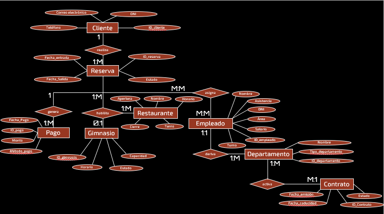
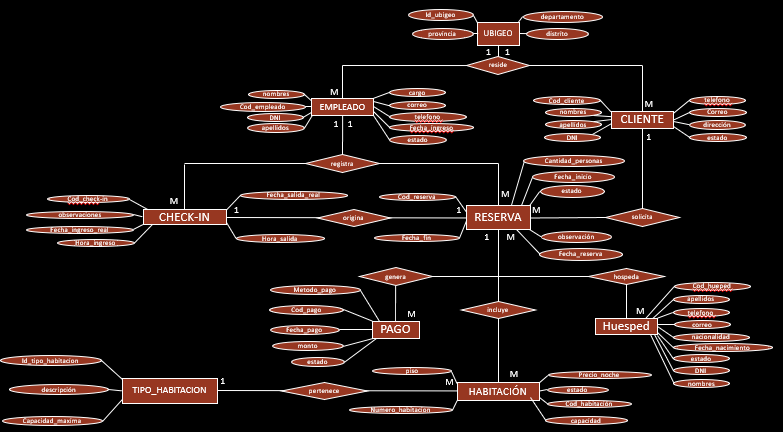
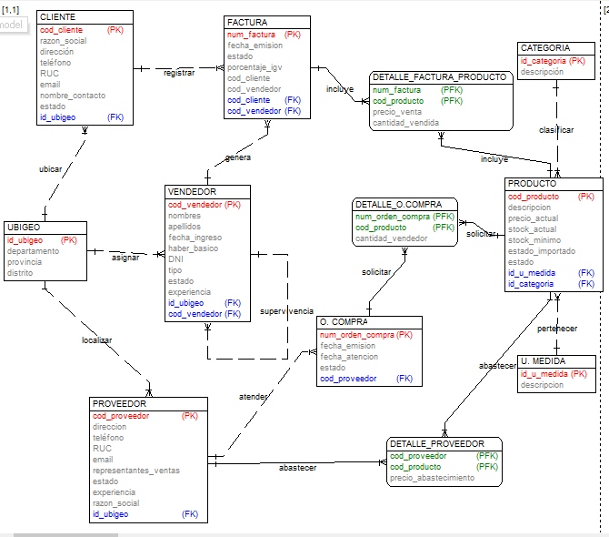
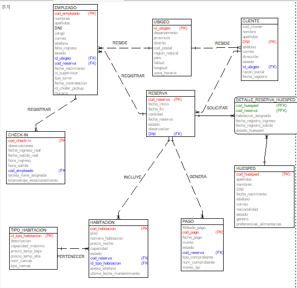
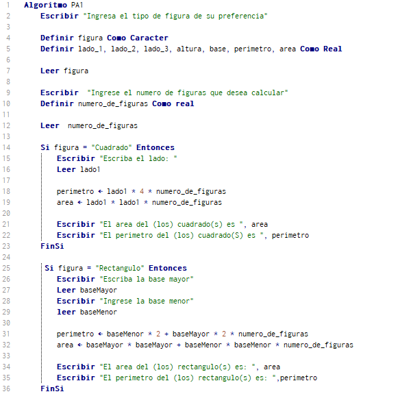
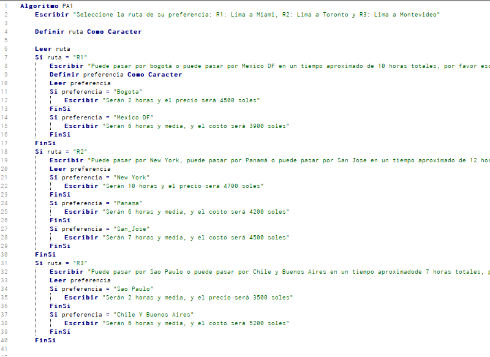
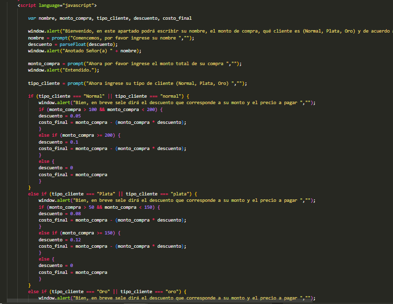
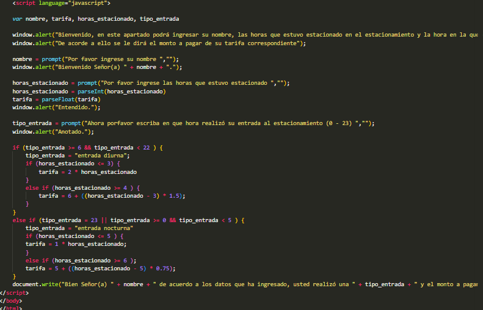

Base de Datos
Mi primer modelo conceptual

Este modelo conceptual me ayudó a comprender los primeros conceptos respectivos a como el usuario influye dentro del mismo con el equipo gráfico para que mantenga coherencia ante los clientes
Mi segundo modelo conceptual

Este modelo conceptual de mi proyecto del curso de base de datos, más ordenado y orientado a las entidades que corresponden al servicio de reservación del negocio de gestión hotelera.
Mi primer modelo lógico con TOAD

Este modelo logico corresponde al ejercicio que me designaron dentro del curso de base de datos, comprendí que a nivel lógico las relaciones pueden ser variadas y de acorde a como se conectan las entidades unas con otras se pueden crear atributos identificadores, en este caso las claves primarias "PK" y las foráneas "FK".
Mi segundo modelo lógico.

Este modelo logico comprende al de mi proyecto, es más extenso en cuanto a atributos, si, no es tan complejo ya que no hay relaciones ternarias o recursivas, pero si mantuvimos las entidades intermedias o entidades debiles, que permiten detallar relaciones de muchos a muchos.
Programacion
Aprendí la lógica de los lenguajes usando el programa Pseint, lo recomiendo para principiantes que quieran inyectarse a este mundo de la programacion.
Mi primer pseudocodigo

Recomiendo sinceramente que si quieres empezar en codigo y aprender la logica, entonces te recomiendo empezar con Pseint, te ayudará a comprender qué es una variable y cómo se comportan, en mi caso fue lo que me mostró la lógica de lo que llamamos programacion.
Mi segundo pseudocodigo

En este segundo codigo de Pseint,comprendí cada detalle de como definir, identar y ordenar codigo de Pseint de forma más eficiente, eso añadiendo que este Pseint detalla las posibilidades de una ruta y una subruta que el usuario puede elegir.
Una de mis primeras scripts

En esta script el programa calcula la categoria de un clinete segun su tipo y el descuento que se le realizará dependiendo del tipo y del monto inicial.
Otra de mis primeras scripts

En esta script se detalla la tarifa de estacionamiento de quienes utilizan el servicio, dependiendo de la hora en que se estacionaron y el tiempo que permaneceieron usando el servicio.